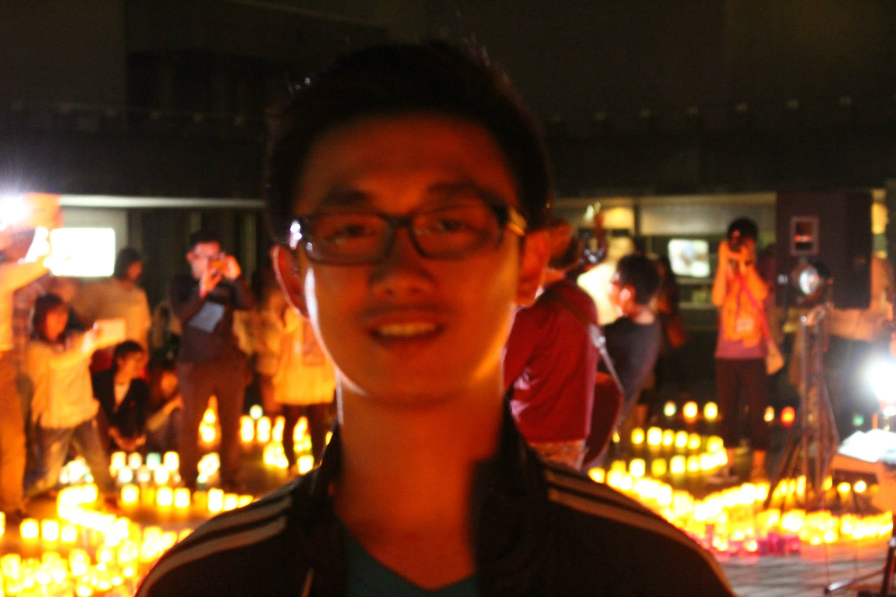

About Me
My name is Ying Huang, I'm 26 years old and born in China. I moved to the US when I was 6 years old about to turn 7. I lived in Philadelphia ever since I moved to the US. I am an only child but grew up surrounded by many cousins, these cousins would be the equivalent of siblings to me as if they were brothers and sisters.
I graduated from Central High school and continued my education at Penn State University. My major at the beginning of college was mechcanical engineering, however by the time I graduated I ended up with a degree in Asian Studies.
My hobbies include playing games, tennis, and baking. My prefer genre of games would be RPG. I first started playing tennis in high school and continue to do so now on a 4.0 tennis team. The best baked dessert I am at making are Japanese cheesecakes, also called cotton cheesecakes.